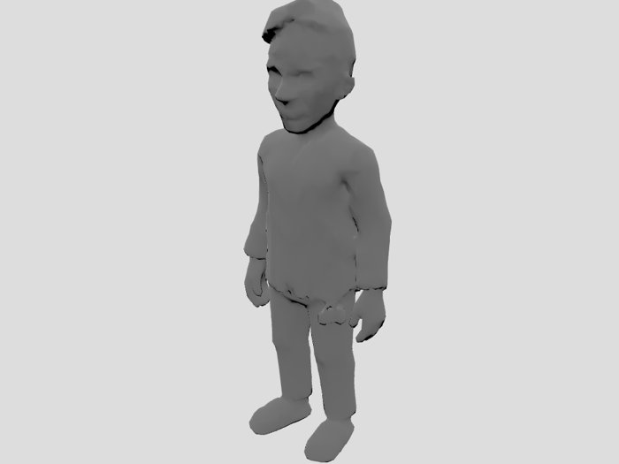
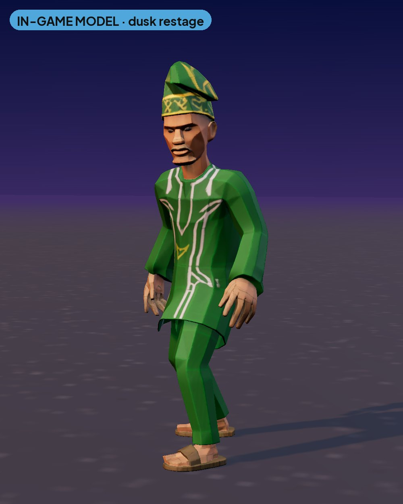
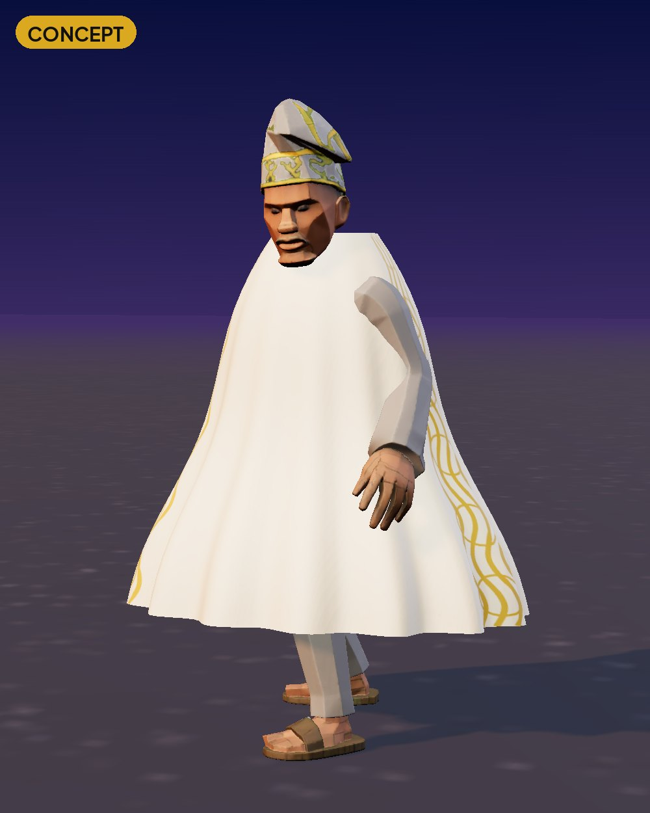
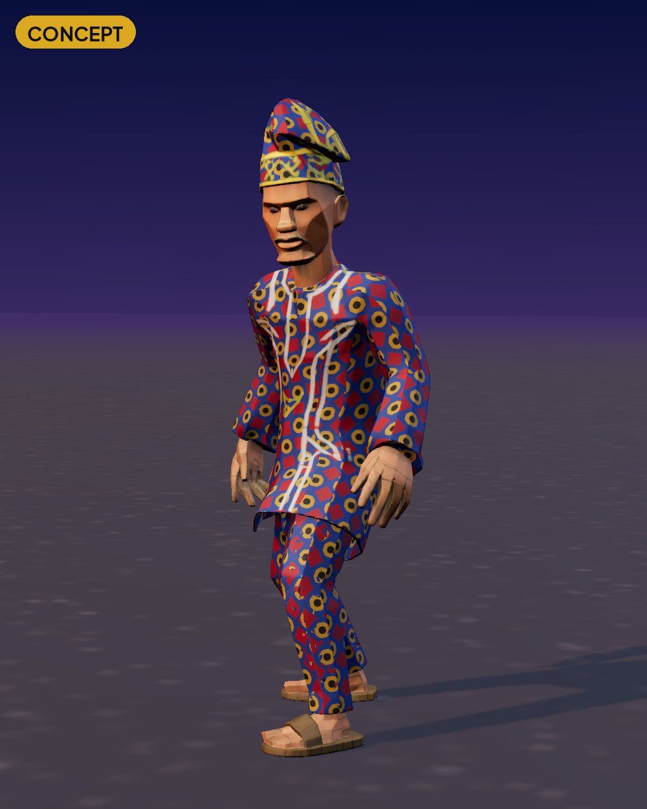
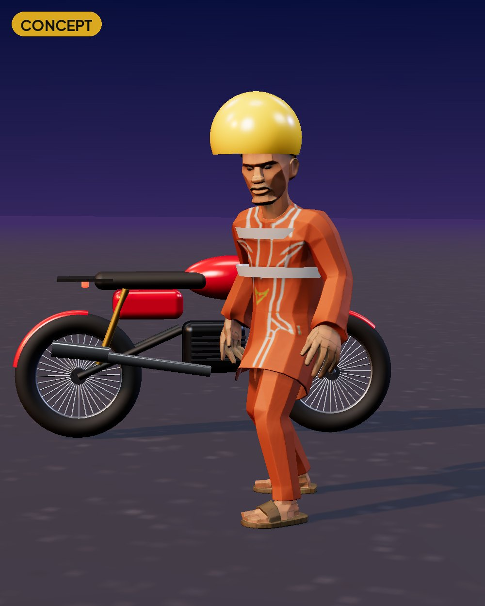
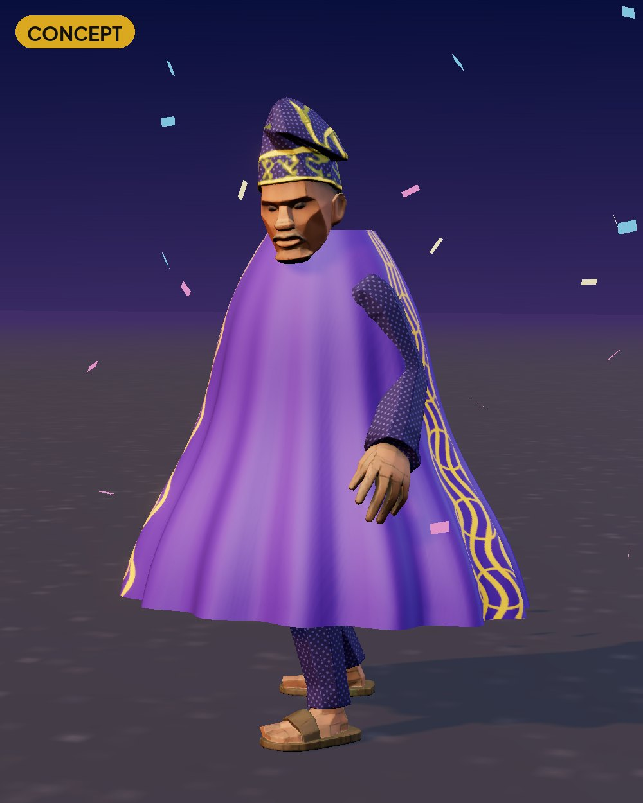
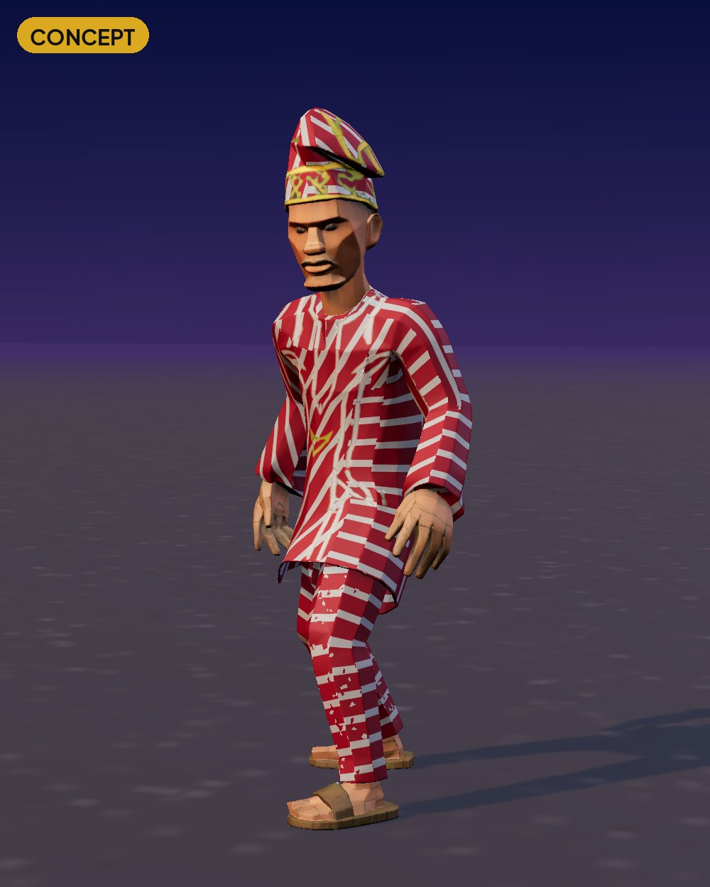

Costumes & skins
Baba Gidi outfits, rendered on the shipped Baba Gidi model and rig at Lagos dusk. Fits are texture swaps plus, for agbada, a robe layer. The Humanoid rig, silhouette and hitbox don't change. These replace the earlier flat drawings.
How to read this page. REFERENCE = an existing project image (pipeline concept input or a render of our own model), hosted because it's project-made. IN-GAME MODEL = our treatment: the shipped model re-staged at Lagos dusk (warm key light, cool rim, asphalt, soft shadows) in a three.js stage. Same mesh and texture as the build. CONCEPT = a new design proposal, not in the game yet. No real people are depicted: every human is one of our own generated in-game models. Provenance is listed in each
reference/*/README.md.Sources. Vision v1: “Baba Gidi outfits (agbada, okada helmet, Ankara fits, football jerseys in generic styles, no licensed kits)” and “Detty December … owambe outfits”. IAP SKUs in
GidiEconomyTables.IapSkus: pack_baba_fits and pack_skins_lagos. Cosmetics are vanity only. Prices and pack contents: TBD (not in the vision doc).Baba Gidi fits (pack_baba_fits)



Reference
Only the default outfit exists in the game. Every other fit below is a CONCEPT.


Green kaftan + fila (shipped texture).


Cream agbada with gold embroidery over the matching kaftan, and a cream/gold fila. The robe is cloth-sim geometry over the same rig.


Blue/gold/red wax-print pattern on the kaftan + trousers (texture swap only).


Yellow open-face helmet with a black stripe and an orange hi-vis kaftan with reflective bands, next to his okada.


Purple lace with a gold-embroidered aso-oke agbada, gold fila and confetti. Seasonal.


Red/white stripes. Generic style only, no licensed kits (vision v1).
Lagos Skins (pack_skins_lagos)
Danfo paint jobs and slogans: see Vehicles · paint jobs.
Still missing
- Translucent “ghost” Baba Gidi (async ghosts, v2 §6): TBD.
- Emotes and trail effects: TBD.
Readability rules
- The hat or helmet must contrast with both asphalt
#26272Eand the walkway at the 65° camera. - Same rig and hitbox for every fit.
- Not costumes: Agbada Man, Slay Queen, commuters, LASTMA and KAI are NPCs (see Characters).